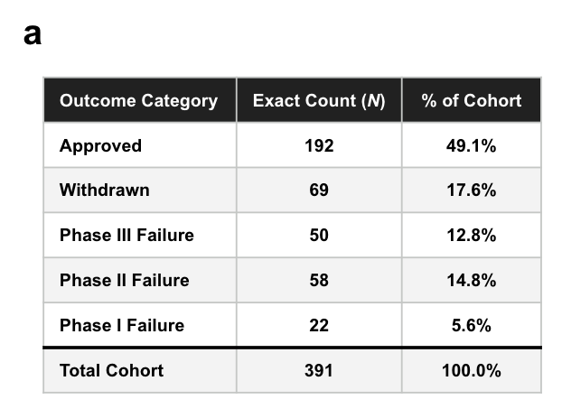
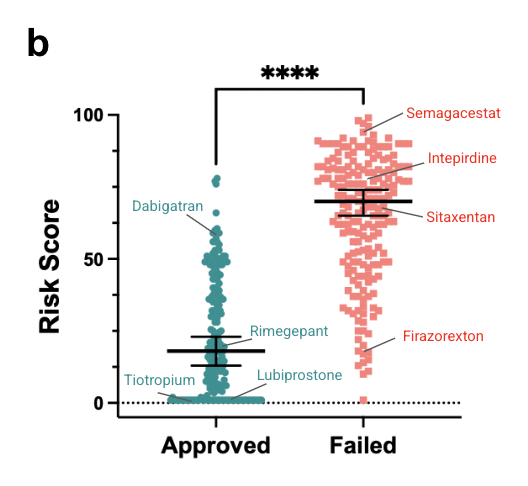
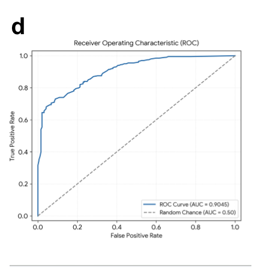
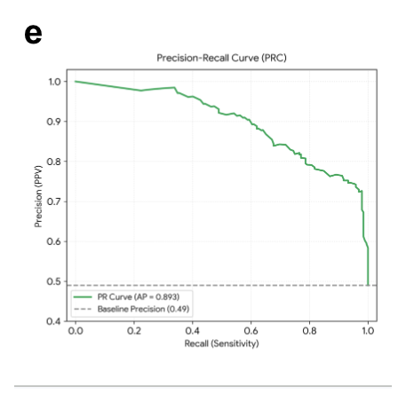
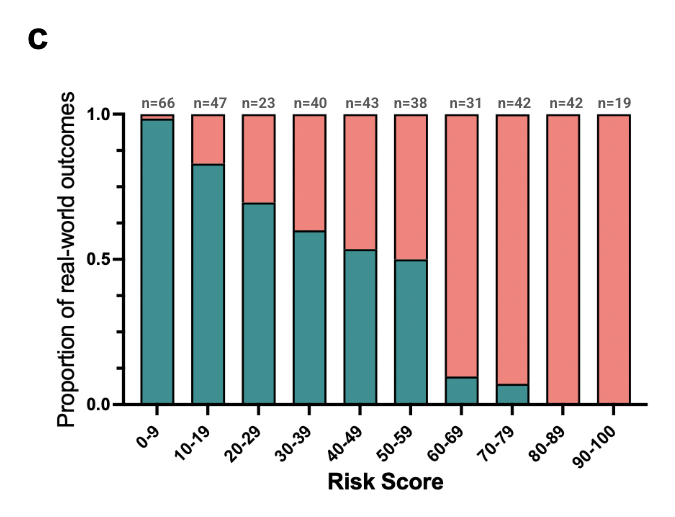

Does It Separate the Winners from the Losers?
Post 3 of 8 on SAISHO’s clinical-outcomes prediction model.
Everything in the last three posts was setup. This is the first result, and it is the most basic test you can put a clinical risk score through: given a drug that was approved and a drug that failed, does the score tell them apart?
The Cohort

391 small-molecule programs. 192 approved, 199 failed or withdrawn.
The inclusion rules were fixed before anything was scored. A program needed a validated public SMILES structure, a defined therapeutic indication, and a verifiable outcome documented in trial registries, regulatory filings, company disclosures, or peer-reviewed literature. Failures were included only where discontinuation was attributable to a documented scientific or clinical cause: efficacy, safety, tolerability, or PK/ADME. Programs shelved for commercial or strategic reasons were excluded, because a drug killed in a portfolio reprioritization tells you nothing about its pharmacology.
Those rules are the selection, and they are the whole of it. We did not then pick among the programs that passed them. 391 is close to what the public record yields on both sides, not a sample of a larger pool, because every additional failure label requires a sponsor to have run a trial and then said publicly why it stopped.
The near-even split follows from that rather than from a balancing step, which is convenient, because it makes discrimination testing clean. It is not a real-world prior: actual approval rates are nowhere near 49%, so read everything here as discrimination rather than as a calibrated probability of success. The benchmark is weighted toward neurological indications, with cardiovascular, metabolic, gastrointestinal and antimicrobial programs making up the rest.
The whole benchmark, including program identities, eligibility decisions, outcome assignments and documented discontinuation reasons, was locked before a single SAISHO assessment ran.
Everything was then scored under the leakage-control protocol: no outcome labels, compound names, development codes, brand aliases or registry identifiers in the inputs, and both web search and chemical-similarity search against known clinical programs disabled. The board had to reason from structure, mechanism and indication, not from recognition.
The Separation

Each point is one program, scored as the median of 100 independent evaluations. Approved programs sit low, failures sit high, and the gap is large: group medians of 18 and 70, a Hodges-Lehmann median shift of 43.5 points, two-tailed Mann-Whitney P < 0.0001, rank-biserial effect size 0.81.
The labelled examples are worth walking through, because they show the score behaving the way a reviewer would rather than the way a filter would.
At the bottom, lubiprostone for constipation and tiotropium for COPD both score 1 out of 100. These are exactly the programs a review board would wave through: well-understood mechanism, local or well-characterized exposure, decades of tolerability precedent in the class. Rimegepant for migraine scores 13.
Then dabigatran, approved, scores 59. That is not a mistake and I think it is one of the more interesting points on the plot. Approval does not mean absence of clinically meaningful risk. The US prescribing information for dabigatran carries a boxed warning covering thrombotic events after premature discontinuation and spinal or epidural hematoma. A score of 59 for a drug with a boxed warning is the system noticing something real. The label is binary; the risk is not.
At the top, semagacestat scores 93. It was discontinued in Phase 3 after worsening cognition in Alzheimer's patients. Intepirdine scores 81, discontinued after failing to improve cognition or daily function. Sitaxentan scores 72, withdrawn after approval because of unpredictable serious liver injury.
The One It Got Wrong
Firazorexton (TAK-994) received a median Clinical Risk Score of 20.
In a randomized, placebo-controlled Phase 2 trial in narcolepsy type 1, firazorexton substantially improved wakefulness and cataplexy. It worked. The trial was then terminated early because hepatotoxicity emerged in several treated participants.
SAISHO underweighted the decisive liability. A score of 20 says low risk, and the program was stopped for a safety signal that killed it outright. That is a miss, and it is in the paper with a label on it in Figure 2b because a low aggregate score does not guarantee clinical success, and any honest account of a risk model has to include the cases where it was comfortable and wrong.
I find this failure more instructive than most of the successes. Idiosyncratic hepatotoxicity that appears in a handful of patients is close to the hardest thing in the entire problem space to anticipate from structure, target and indication alone. If someone tells you their system catches that reliably, ask them for their firazorexton.
The Aggregate Numbers


AUROC 0.90, with a bootstrapped 95% confidence interval of 0.88 to 0.93. Average precision 0.89, computed on the inverse risk score as a predictor of approval, against an approved-class prevalence baseline of 0.49.
The prevalence baseline is the number to anchor on. Because the cohort is close to balanced, a coin flip scores 0.49 average precision. 0.89 against that floor is the actual claim.
The Monotonicity Is the Useful Part

For practical purposes I think this panel matters more than the AUROC, because it is the one that tells you what a score means when you get one.
Outcomes track the score tiers. In the 0 to 9 band, 66 programs, essentially all approved. The mixing zone sits between 40 and 59, which is where you would expect a genuinely uncertain assessment to land. From 60 upward the relationship inverts hard, and in the 80 to 100 bands it is close to categorical.
A score is only useful if a 70 means something different from a 40 and both mean something different from a 10. Here they do, and the gradient is smooth rather than a step function bolted on at a threshold.
What This Does Not Show
This is a discrimination result on a retrospective cohort, and two things follow from that scope.
It does not show calibration against real-world base rates, because the cohort is near-balanced by construction. And it does not show that the system is right for the right reason, which is a separate measurement entirely and the subject of post 5.
There is also a question this result cannot answer on its own. The leakage controls govern what SAISHO retrieves and reasons over; they do not govern what the underlying foundation models absorbed during pretraining. A SMILES string can function as a fingerprint for a well-characterized drug. That is exactly why we built the post-freeze and timestamped cohorts, and post 8 is the answer. It is the part of the paper I would point a skeptic at first.
Next week: what happens when you run the same drug one hundred times.
More on the platform at saisho.ai.